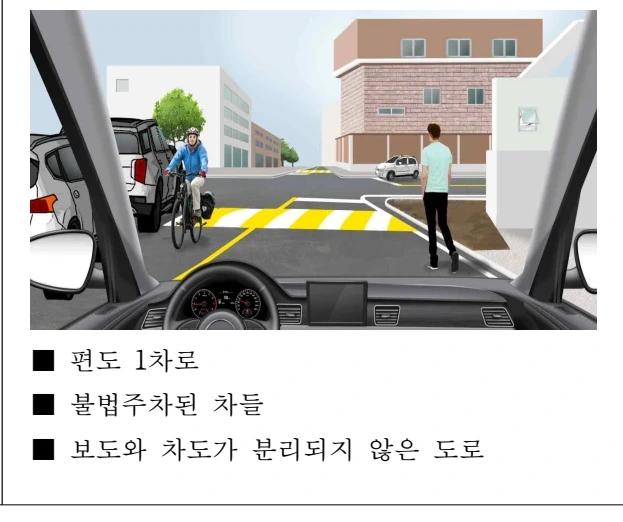

864. 如下图所示，下列选项中的哪两项是最安全的驾驶方法？

- ①预测前方行人可能会突然从左侧横穿出来，做好停车准备。
- ②想要直行时，因为在前方交叉路口没有车，所以慢行通过。
- ③在进入交叉路口前，停车，观察从左、右侧驶来的车。
- ④反复向周围的自行车和行人鸣笛，告知我车在通行。
- ⑤为了将前方行人引导至路边缘区域，应当贴右侧通行。
查看答案
答案
① 预测前方行人可能会突然从左侧横穿出来，做好停车准备。
③ 在进入交叉路口前，停车，观察从左、右侧驶来的车。
依据
风险预测。道路交通法第 31 条（临时减速或停车的场所）第 2 项所有汽车或电车的驾驶者必须在下列场所临时停车： 1.没有交通指挥且无法确认左右情况或交通频繁的路口。 第二十五条（路口通行方式）①所有车辆驾驶人在路口欲右转时，必须提前沿道路右边缘缓慢行驶右转。在这种情况下，右转汽车的驾驶员必须注意根据信号停止或前进的行人或自行车。 ② 车辆驾驶员在路口左转时，必须提前沿道路中心线缓慢行驶，并利用路口中心内侧左转。但在市、省警察厅长根据路口情况认定特别必要并指定的地点，车辆可以从路口中心外侧通过。 ③ 尽管有第 2 款的规定，自行车等的驾驶者在十字路口左转时，必须首先移动到道路的右侧边缘，缓慢行驶，然后利用十字路口边缘左转。 ④ 如果有车辆按照第 1 款至第 3 款的规定用手势、方向灯或信号灯发出右转或左转信号，则后车的驾驶员不得阻碍发出信号的前车的前进。 ⑤ 驶入有信号控制的路口前，如果前方车辆或有轨电车的情况会迫使本车停在路口内（设有停止线时指越过停止线的部分）并可能妨碍其他车辆或有轨电车通行，不得驶入。 ⑥ 在没有交通管制的情况下，车辆驶入设有临时停车、让行安全标志的路口时，必须临时停车、让行，以免妨碍其他车辆通行。道路交通法第 49 条（所有驾驶者应遵守的事项等）第 8 项第 1 项。驾驶者无正当理由不得有下列行为，并产生可能对他人造成伤害的噪音。快速启动汽车或迅速提高速度的行为。提高汽车发动机等的转速而不将其传递到汽车车轮的行为。重复或连续鸣响喇叭
依据文字为学习用机器翻译。